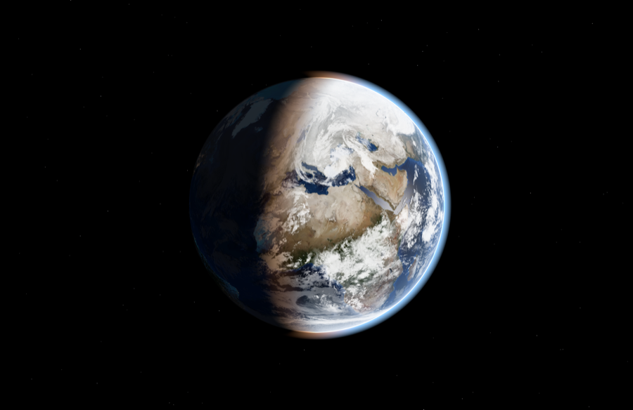
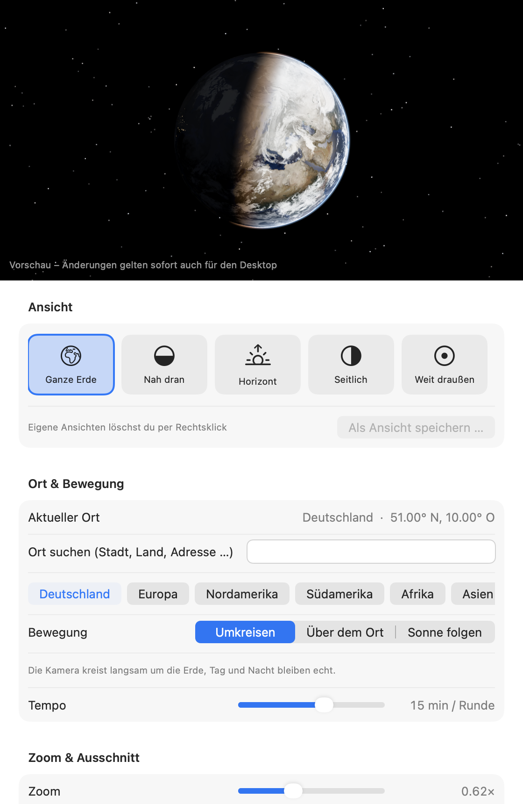

Echtzeit-Beleuchtung
Sonnenstand aus Datum und Uhrzeit berechnet (~0,01° genau) – mit Dämmerungszone, Sonnenspiegelung auf den Ozeanen und Atmosphäre.
Die Erde als Desktop-Hintergrund – genau so, wie sie in diesem Moment aussieht: Tag und Nacht am richtigen Ort, leuchtende Städte und Live-Wolken aus Satellitendaten.
Die Erde im Hintergrund wird live in deinem Browser berechnet.Funktionen
Earth Now läuft unauffällig unter deinen Desktop-Icons und zeigt immer den aktuellen Zustand unseres Planeten.
Sonnenstand aus Datum und Uhrzeit berechnet (~0,01° genau) – mit Dämmerungszone, Sonnenspiegelung auf den Ozeanen und Atmosphäre.
Wolkenkarten aus Satellitendaten, alle drei Stunden aktualisiert. Offline greift die App automatisch auf statische Wolken zurück.
Auf der Nachtseite leuchten die Städte – basierend auf den Black-Marble-Aufnahmen der NASA.
Ganze Erde, Nah dran, Horizont, Seitlich oder Weit draußen – plus eigene, gespeicherte Ansichten.
Ort über Apple Karten suchen, die Kamera fliegt weich hin. Dann umkreisen, über dem Ort stehen oder der Sonne folgen.
Die Bildrate passt sich der Bewegung an; verdeckte Bildschirme und schlafende Displays pausieren komplett.
Ein Fenster pro Bildschirm, unter den Desktop-Icons. Klicks gehen einfach durch.
Ansicht und Bewegung schnell über das Globus-Symbol wechseln; die Einstellungen zeigen eine Live-Vorschau.
Screenshots
Aufnahmen direkt aus der App.


Kostenlos. Läuft in der Menüleiste und braucht keine Einrichtung.
Bald verfügbar – der erste Release ist in Vorbereitung.
Credits & Lizenzen
Earth Now nutzt folgende Inhalte und Bibliotheken von Dritten.
| Inhalt | Quelle | Lizenz / Hinweis |
|---|---|---|
| Tagesansicht der Erde | NASA Earth Observatory, Blue Marble: Next Generation (Oktober 2004, mit Topografie & Bathymetrie), Reto Stöckli | Gemeinfrei (Werk der US-Regierung). Quelle: „NASA Earth Observatory“ |
| Nachtlichter | NASA Earth Observatory, Black Marble 2016 | Gemeinfrei (Werk der US-Regierung). Quelle: „NASA Earth Observatory / Suomi NPP VIIRS“ |
| Statische Wolken, Normal- & Glanzkarte | three.js-Beispieltexturen (examples/textures/planets) |
MIT-Lizenz |
| Live-Wolken | matteason/live-cloud-maps, Bilder: CC0 1.0 | Contains modified EUMETSAT data (EUMETSAT-Datenlizenz) |
| 3D-Darstellung | three.js 0.160.0 | MIT-Lizenz |
Hinweis: Die Live-Wolken in der App und in der Live-Ansicht oben auf dieser Seite contain modified EUMETSAT data. Bereitgestellt über matteason/live-cloud-maps; es gelten die Lizenzbedingungen von EUMETSAT.